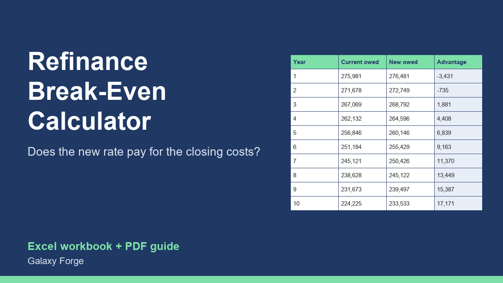

Find out whether a refinance really pays: monthly savings, break-even month, and the true cost difference over the years you will actually keep the loan.
A lower rate is only half of a refinance decision. The other half is what it costs to get there (closing costs, fees, points) and how long you will keep the new loan.
Most quick calculators stop at the monthly saving. This workbook also finds the break-even month, and compares the two loans over the period you expect to keep the loan, counting the payments made and the balance still owed at the end, so a longer new term cannot hide its cost.
Enter the current loan, the new offer and the closing costs; choose whether the costs are paid in cash or rolled into the new loan. The Year by Year sheet shows both balances and the running cost difference for ten years.
1) On Inputs, enter the current balance, current rate and months remaining (from your latest statement). 2) Enter the new rate and term from the lender's Loan Estimate, and the total closing costs. 3) Type 1 if the costs will be rolled into the new loan, 0 if you pay them in cash. 4) Enter how many months you realistically expect to keep the loan. 5) Read Comparison: monthly saving, break-even month and the net benefit over your horizon. 6) Year by Year shows how the gap develops.
Price: $15, one-time. Download: refinance_break_even_calculator.xlsx (Inputs, Comparison, Year by Year) and this guide. Works in Excel 2016 or later, Excel for Mac and Excel on the web; opens in Google Sheets and LibreOffice.
New product, listed 2026-10-24: no sales or reviews yet. Example figures in the workbook are illustrative.
This workbook is a comparison tool, not financial, lending or tax advice. It uses fixed-rate payment math and the figures you enter; check any loan decision against your lender's official Loan Estimate and with a qualified adviser.